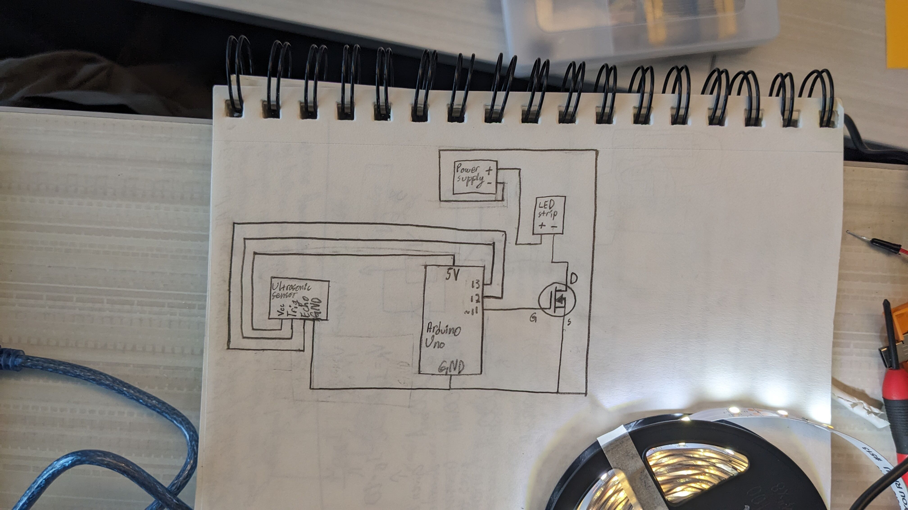
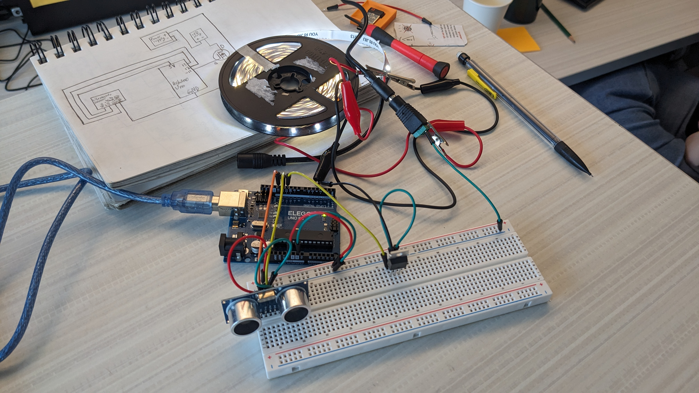
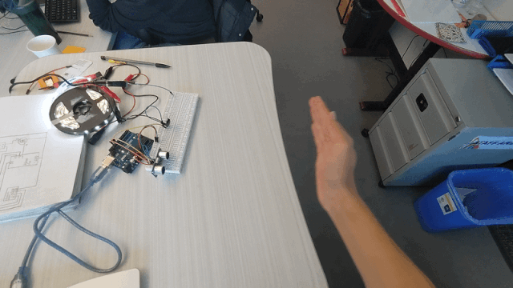
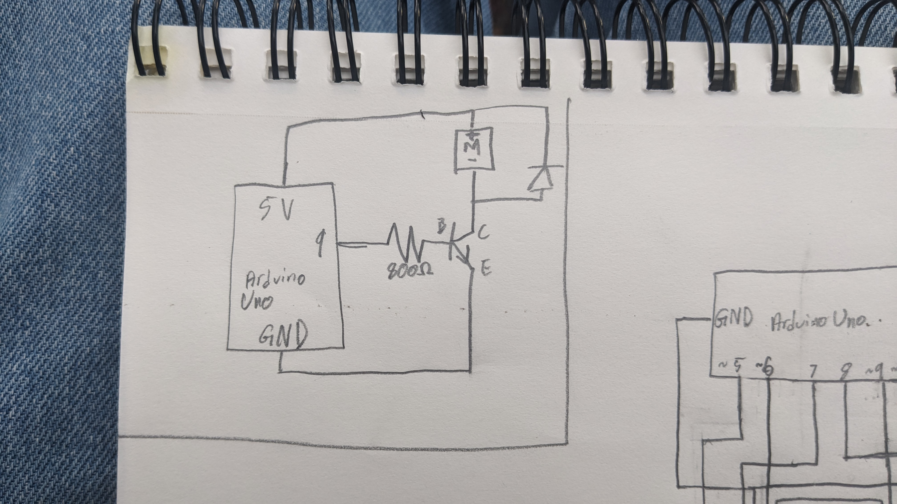
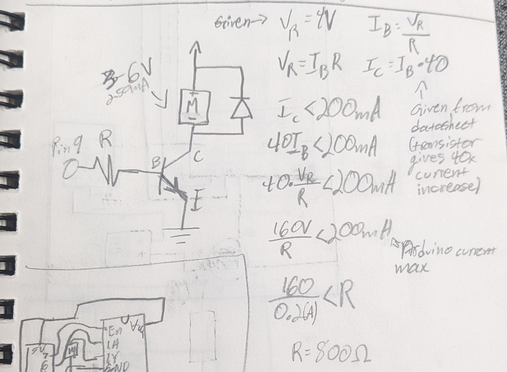
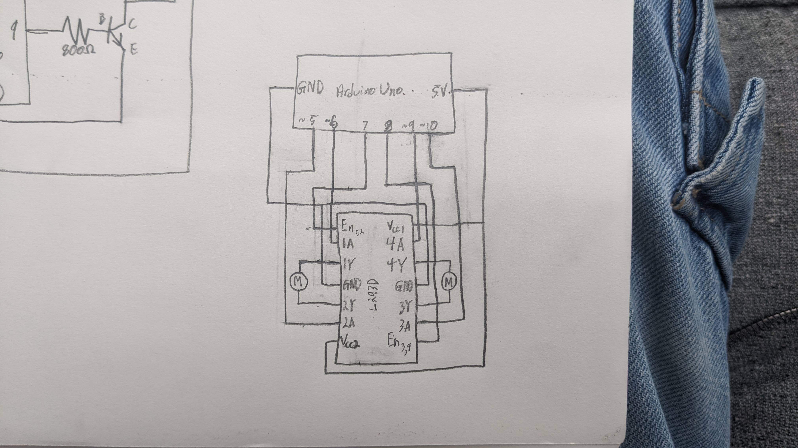

The max current of the LED strip is 1.5A (from the manual of the LED strip), this is well below the N mosfets max current rating of 47A (from the datasheet of the IRLZ44N N mosfet)

// Imports Ultrasonic library created by Erick Simões
#include
// Creates the ultrasonic sensor object. Pin 13 is trigger (sends the sound) and pin 12 is echo (recieves the sound)
Ultrasonic distSensor(13, 12);
// Defines the minimum and maximum values to constrain the sensor value to
const int minSensorLim = 0;
const int maxSensorLim = 50;
// Defines the variables neccessary for the timer logic used in place of delay()
// Fun fact, overflow won't actually break the logic as long as all vars related to the timer function are same datatype
unsigned long prevMillis = 0;
const unsigned long readInterval = 50;
void setup() {
// Sets the pin that connects to the MOSFET gate pin to OUTPUT so the Arduino can control it and by extension, the LED strip
pinMode(11, OUTPUT);
// Sets baud rate for logs
Serial.begin(9600);
}
void loop() {
// Sets currMillis to the current runtime milliseconds
unsigned long currMillis = millis();
// If the time defined in readInterval has passed run the logic inside
if (currMillis - prevMillis >= readInterval) {
// Updates prevMillis for the next check on the next loop
prevMillis = currMillis;
// Reads the sensor value (distance in CM), constrains the value to the vars minSensorLim and maxSensorLim defined earlier, and maps them to PWM in reverse such that the shorter the distance, the brighter the light
// Fun fact, constrain() calls whatever is in the read() 3 times if you don't ( [Call #1] < 0 ) ? 0 : ( ( [Call #2] > 100 ) ? 100 : [Call #3] )
int sensorVal = distSensor.read(CM);
int sensorValConstrainedAndMapped = map(constrain(sensorVal, minSensorLim, maxSensorLim), minSensorLim, maxSensorLim, 255, 0);
// Prints the raw sensor value and the mapped sensor value to the serial monitor
Serial.println(sensorVal);
Serial.println(sensorValConstrainedAndMapped);
Serial.println();
// Writes to pin 11 the sensor value that is now constrained and mapped to PWM brightness values
analogWrite(11, sensorValConstrainedAndMapped);
}
}

The mosfet in my kit is a IRLZ44N. The absolute maximum amount of current between pin 2 (drain) and pin 3 (source) at 25°C is 47 amps, at 100°C is 33 amps, and during a short pulse is 160 amps.



int enableL = 7; // Pin 7 connected to enable
int enableR = 8; // Pin 8 connected to enable
int motorL_ccw = 6; // Pin 6 connected to motor control 1A
int motorR_ccw = 9; // Pin 9 connected to motor control 4A
int motorL_cw = 5; // Pin 5 connected to motor control 2A
int motorR_cw = 10; // Pin 10 connected to motor control 3A
void setup() {
// Set the pins
pinMode(enableL, OUTPUT);
pinMode(enableR, OUTPUT);
pinMode(motorL_ccw, OUTPUT);
pinMode(motorR_ccw, OUTPUT);
pinMode(motorL_cw, OUTPUT);
pinMode(motorR_cw, OUTPUT);
// Enable both motor drivers all the time
digitalWrite(enableL, HIGH);
digitalWrite(enableR, HIGH);
}
void loop() {
//brake the motor
digitalWrite(motorL_ccw, LOW);
digitalWrite(motorL_cw, LOW);
digitalWrite(motorR_ccw, LOW);
digitalWrite(motorR_cw, LOW);
delay(100);
//run the motors CW
digitalWrite(motorL_ccw, LOW);
digitalWrite(motorL_cw, HIGH);
digitalWrite(motorR_ccw, LOW);
digitalWrite(motorR_cw, HIGH);
delay(100);
//run the motors CCW
digitalWrite(motorL_ccw, HIGH);
digitalWrite(motorL_cw, LOW);
digitalWrite(motorR_ccw, HIGH);
digitalWrite(motorR_cw, LOW);
delay(100);
//run L motor CW R motor CCW
digitalWrite(motorL_ccw, LOW);
digitalWrite(motorL_cw, HIGH);
digitalWrite(motorR_ccw, HIGH);
digitalWrite(motorR_cw, LOW);
delay(100);
//run L motor CCW R motor CW
digitalWrite(motorR_ccw, LOW);
digitalWrite(motorR_cw, HIGH);
digitalWrite(motorL_ccw, HIGH);
digitalWrite(motorL_cw, LOW);
delay(100);
}